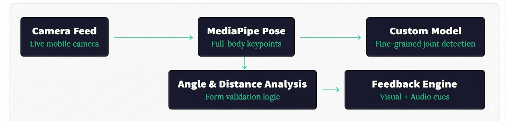

Problem Statement
Physiotherapy rehabilitation, especially for shoulder injuries, demands precise and consistent exercise execution. Shoulder Retraction and Scapular Extension (SRSE) exercises are commonly prescribed for shoulder rehabilitation, but patients performing these at home without supervision often develop incorrect form — which can slow recovery or cause further injury. Physiotherapists have no scalable way to monitor patient form in real time outside the clinic.
Manual supervision is expensive, geographically limited, and unavailable during most of a patient's daily exercise sessions. There was a clear need for an intelligent, accessible, and privacy-respecting system to fill this gap.
Approach
Traditional approaches to exercise monitoring rely on wearable sensors, force plates, or clinic-based motion capture systems — all of which are costly, require specialist hardware, and are inaccessible to most patients at home. Computer vision-based approaches using standard cameras offer a more accessible path, but general-purpose pose estimation models often lack the sensitivity needed for small, subtle physiotherapy movements like scapular retractions.
We developed a fully on-device solution for mobile phones. No images or video ever leave the user's device — all inference happens locally, making the system completely private and functional without an internet connection.
Solution
The system uses a real-time camera feed from the mobile phone as its only input. Frames are passed through a two-stage inference pipeline:

- MediaPipe Pose Estimation — The first stage runs Google's MediaPipe Holistic model to extract 33 body landmarks from each frame in real time. This provides a full skeleton map including shoulder, elbow, wrist, and torso keypoints critical for SRSE exercises.
- Custom Model with ROI Cropping — SRSE exercises involve subtle scapular movements that general-purpose pose models struggle to resolve accurately. A Region of Interest (ROI) crop is computed around the shoulder girdle from MediaPipe's output, and this cropped region is passed to a custom fine-tuned model trained specifically on shoulder rehabilitation movements. Running both models in parallel allows coarse global pose tracking alongside sensitive local joint detection.
Once keypoints are extracted, the system computes joint angles and relative distances between landmark points — specifically monitoring scapular retraction depth, shoulder blade symmetry, and arm position relative to the spine. These measurements are evaluated against pre-defined thresholds derived from clinical physiotherapy guidelines.
If the system detects that the user's form deviates from the correct movement pattern, it immediately triggers a real-time feedback response: a visual message is displayed on screen describing the specific error (e.g., "Bring your shoulder blades closer together" or "Keep your arms at shoulder height"), accompanied by an audio cue so the user doesn't need to look at the screen mid-exercise.
Challenges
Shoulder rehabilitation exercises are among the most difficult to track with computer vision. Unlike large movements such as squats or jumping jacks, SRSE exercises involve small, precise movements of the scapula — a bone that sits behind the rib cage and produces minimal visible surface displacement. Standard pose models are not trained to resolve these subtleties reliably.
Variability in patient body types, clothing, lighting conditions, and camera placement introduced significant noise. Running two models in parallel on a mobile CPU without degrading frame rate was a major engineering constraint that required careful optimization of the inference pipeline, including model quantization and ROI batching.
Defining the correct form thresholds for diverse patients also required close collaboration with physiotherapists to ensure the system's feedback was clinically meaningful and not overly rigid, since slight variation in technique is expected and acceptable across individuals.